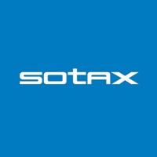
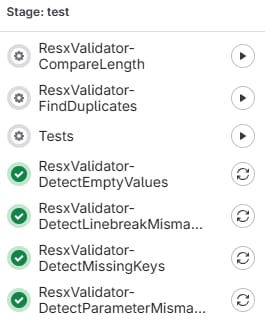
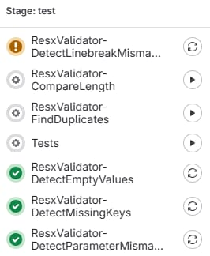
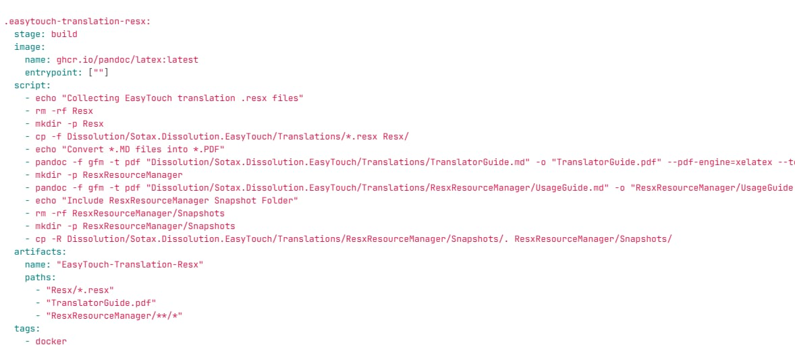
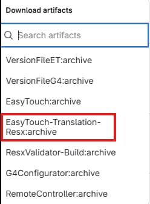
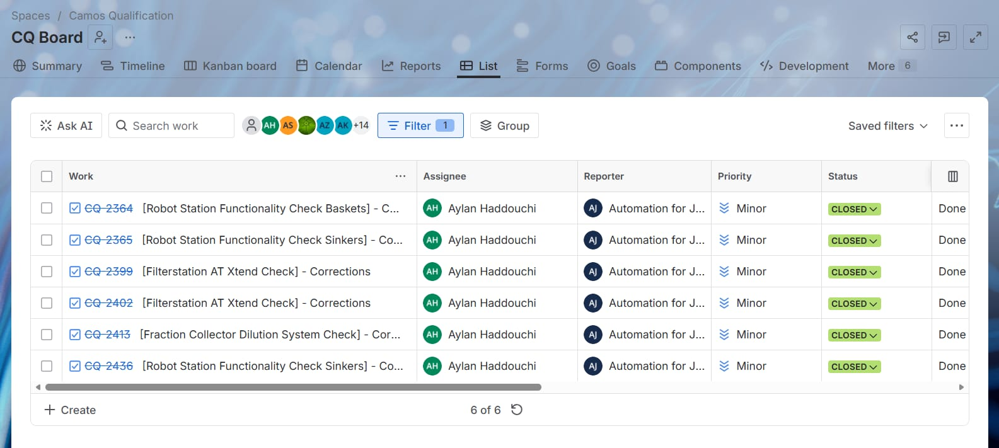

Ce site constitue mon portfolio de deuxième année de BUT Informatique. Il présente une description et une analyse des savoir-faire que j'ai acquis et mis en œuvre lors de mon alternance en entreprise.
L'objectif est d'exposer mes compétences techniques, ma capacité à suivre un projet et mon intégration au sein de l'entreprise, en les illustrant par des traces concrètes issues de mon expérience professionnelle.
Pour accéder aux 3 parties principales (Technique, Suivi de projet, Intégration), un panneau de menu est affichable en cliquant sur le bouton menu en haut à gauche.
Les différentes traces, descriptifs et analyses présentés dans ce portfolio sont issus de mon alternance effectuée chez SOTAX Pharma Services, de août 2025 à août 2027. Le rythme d'alternance est d'une semaine en entreprise / une semaine à l'IUT en période scolaire, et à temps plein en entreprise en dehors de ces périodes.

Le logo de l'entrepriseSOTAX Pharma Services est une entreprise spécialisée dans les solutions et services pour l'industrie pharmaceutique. Elle conçoit et commercialise des appareils de dissolution et de tests physiques, ainsi que les logiciels permettant de les piloter et d'assurer la conformité réglementaire (compliance). Au sein de l'équipe de développement logiciel, j'ai travaillé sur plusieurs projets internes couvrant le développement d'applications desktop et mobiles, l'intégration continue, la refonte d'outils existants et la contribution à des logiciels industriels.
Personnels impliqués : développeurs seniors, chef du Product Management, testeurs qualité, experts métier. J'ai travaillé en autonomie sur certains projets (application visiteurs, validateur de traductions) et en collaboration étroite avec l'équipe sur d'autres (Camos, Easytouch).
Moyens de travail : environnement Windows, Visual Studio 2026, .NET Framework et .NET Core, MySQL, GitLab (CI/CD, YAML), Jira, Confluence, imprimantes Zebra (réseau WiFi).
Les savoir-faire généraux nécessaires à la réalisation de mes différentes missions sont très variés et couvrent plusieurs domaines de l'informatique.
Sur le plan technique, j'ai principalement travaillé sur le développement d'applications multi-plateformes en C# (console, WinForms, Android/MAUI), incluant la communication réseau avec des périphériques d'impression WiFi (Zebra SDK). J'ai également conçu un outil de validation automatique basé sur une architecture propre (SOLID, Dependency Injection) et intégré dans un pipeline CI/CD GitLab.
Concernant le suivi de projet, j'ai su traduire des besoins utilisateurs (URS) en fonctionnalités concrètes pour l'application de gestion des échantillons, et j'ai mis en place des pipelines CI/CD pour automatiser les workflows de traduction.
En matière d'intégration en entreprise, j'ai notamment contribué de manière continue au projet Camos, avec une prise de responsabilité progressive allant jusqu'à assurer le rôle de responsable temporaire lors de l'absence du lead développeur.
Cette partie présente mes savoir-faire techniques acquis et mis en œuvre lors de mon alternance chez SOTAX. Deux traces illustrent des réalisations concrètes, suivies d'un bilan et d'une auto-évaluation de mes compétences techniques générales.
La Trace 1 ci-contre représente l'application d'enregistrement des visiteurs développée pour SOTAX Pharma Services. Avant cette application, l'enregistrement des visiteurs se faisait entièrement sur papier à l'accueil du laboratoire. Ce processus posait un problème majeur : en cas d'urgence (évacuation, incident), il n'existait aucun moyen rapide de savoir quels visiteurs étaient présents sur site. L'application permet désormais d'enregistrer numériquement chaque visiteur (nom, entreprise, personne visitée, horaires d'entrée et de sortie) avec un accès instantané à la liste des personnes présentes.
Le développement a suivi une progression technique réfléchie. J'ai d'abord créé une version C# console pour mettre au point et valider la logique de sauvegarde des données. Puis j'ai développé une version WinForms pour disposer d'une interface graphique utilisable sur un ordinateur à l'accueil. Enfin, j'ai porté l'application sur Android avec MAUI pour répondre à un besoin de praticité : une tablette est désormais installée à l'entrée du laboratoire et les visiteurs s'enregistrent directement dessus. Cette progression m'a permis de développer une véritable application multi-plateforme, en adaptant l'architecture et l'interface à chaque cible (desktop Windows, tablette Android).
Une extension majeure du projet a été l'ajout de l'impression de badges visiteurs via une imprimante WiFi Zebra. J'ai dû intégrer le Zebra SDK pour communiquer en réseau (HTTP), gérer la découverte d'imprimantes par IP et assurer la fiabilité de la communication WiFi. La principale difficulté technique a été de résoudre les problèmes de compatibilité entre les différentes versions du Zebra SDK et les versions de .NET utilisées dans le projet.
Tout au long du développement, j'ai géré la persistance des données en CSV puis réorganisé les sauvegardes vers le cloud pour améliorer l'expérience utilisateur et la fiabilité des données. L'application est aujourd'hui en version opérationnelle, utilisée quotidiennement à l'accueil du laboratoire, et fait l'objet d'améliorations continues.


La Trace 2 ci-contre représente l'outil de validation automatique de traductions (.resx) que j'ai développé en C# Console, avec une intégration dans le pipeline CI de GitLab. Cet outil remplace un existant développé en Delphi, un langage vieillissant qui n'est plus utilisé dans nos services et qui rendait la maintenance difficile. La refonte en C# permet de l'intégrer dans l'écosystème .NET moderne de l'entreprise et d'en faciliter l'évolution.
L'outil applique des tests automatiques pour vérifier la qualité des traductions : détection des traductions manquantes, des problèmes de ponctuation, des incohérences entre les fichiers source et traduits, et des différences de longueur significatives. J'ai conçu l'architecture en respectant les principes SOLID, en utilisant la Dependency Injection et en organisant le code par features. Cette structuration garantit la maintenabilité du projet et permet d'ajouter facilement de nouvelles règles de validation sans modifier le code existant.
L'outil a été intégré dans un pipeline CI GitLab et s'exécute automatiquement à chaque commit et à chaque merge request. En cas d'échec, le pipeline génère un rapport détaillé listant chaque traduction ayant provoqué une erreur ou un warning, selon la gravité du problème détecté. Les codes de sortie sont adaptés à l'intégration continue (échec bloquant pour les erreurs critiques, avertissement pour les problèmes mineurs), et les résultats sont disponibles sous forme d'artifacts GitLab consultables directement par les développeurs.
Au cours de mon alternance, j'ai développé des applications multi-plateformes en C# en suivant une progression technique réfléchie : d'abord une application console pour valider la logique métier, puis WinForms pour offrir une interface graphique sur desktop, et enfin MAUI pour déployer l'application sur une tablette Android à l'accueil du laboratoire (Trace 1). J'ai également intégré la communication réseau avec des périphériques (imprimante Zebra via WiFi/HTTP) pour l'impression de badges visiteurs, ce qui m'a confronté à des problèmes concrets de compatibilité entre versions du Zebra SDK et versions de .NET. Enfin, j'ai géré la persistance de données en CSV puis réorganisé les sauvegardes vers le cloud. La programmation orientée objet et les bases du C# ont été vues en cours de BUT, mais le développement multi-plateforme avec MAUI, l'intégration de SDK matériels et la gestion de la compatibilité .NET Framework / .NET Core ont été entièrement appris en entreprise.
Niveau avant l'alternance : Bases en C# et programmation orientée objet acquises en cours. Aucune expérience avec WinForms, MAUI ou l'intégration de SDK matériels. Pas de connaissance des différences entre .NET Framework et .NET Core.
Niveau actuel : Bon. Je suis capable de concevoir et développer une application complète depuis la console jusqu'à une application mobile déployée sur tablette, d'intégrer des SDK tiers (Zebra) en résolvant les problèmes de compatibilité, et de gérer la persistance de données sous différentes formes. L'application est aujourd'hui en production et utilisée quotidiennement. Des progrès restent à faire sur l'optimisation mobile et la gestion avancée des cycles de vie Android.
L'outil de validation automatique (Trace 2) a été conçu pour remplacer un existant en Delphi, un langage vieillissant qui n'était plus maintenu dans les services de l'entreprise. Ce contexte de refonte m'a imposé de concevoir une architecture SOLID avec Dependency Injection dès le départ, afin de garantir que le nouvel outil soit facilement maintenable et extensible. L'organisation par features et le respect des principes de responsabilité unique permettent d'ajouter de nouvelles règles de validation (ponctuation, cohérence, longueur) sans modifier le code existant. J'ai également intégré cet outil dans un pipeline CI/CD GitLab, avec une exécution automatique à chaque commit et merge request, des codes de sortie différenciés (erreurs vs warnings) et des artifacts consultables. Pour concevoir cette architecture propre et la mettre en pratique sur un projet de refonte industrielle avec intégration CI/CD, j'ai bénéficié de l'aide et de l'accompagnement précieux de collègues expérimentés (développeurs seniors) de mon équipe.
Niveau avant l'alternance : Connaissance théorique très basique des principes SOLID. Aucune expérience pratique de CI/CD, d'injection de dépendances (DI) dans un projet réel, ni de refonte d'un logiciel existant.
Niveau actuel : Bon à très bon. Je maîtrise l'application concrète des principes SOLID et de la DI dans un projet C#. Je suis capable de configurer et maintenir un pipeline CI/CD GitLab avec gestion d'artifacts, de codes de sortie et de déclencheurs (commit, merge request). L'outil est aujourd'hui en production et utilisé en phase de test par l'équipe. La difficulté principale résidait dans la compréhension de l'injection de dépendances au départ, mais le travail d'analyse avec un développeur senior m'a permis de progresser rapidement.
Cette partie présente mes savoir-faire en matière de suivi et gestion de projet, acquis lors de mon alternance. Deux traces illustrent mes réalisations, suivies d'un bilan évaluant mes compétences en pilotage de projet.
La Trace 3 ci-contre représente l'application WinForms de gestion des échantillons laboratoire, développée à partir d'un URS (User Requirements Specification) fourni par l'entreprise. L'URS décrivait des besoins précis de traçabilité : pouvoir enregistrer quel utilisateur a enregistré quel échantillon, à quelle date et dans quelles conditions, afin de répondre aux exigences réglementaires de l'industrie pharmaceutique.
L'objectif principal était de remplacer un processus entièrement papier par une application numérique fiable. J'ai dû traduire les besoins utilisateurs décrits dans l'URS en fonctionnalités concrètes : formulaire d'enregistrement des échantillons avec identification automatique de l'utilisateur via son identifiant Windows (pas besoin de saisir manuellement qui enregistre), génération de PDF récapitulant la liste des échantillons enregistrés, et interface MDI permettant de travailler sur plusieurs vues en parallèle.
Après l'implémentation complète et la mise en place d'une version de test, j'ai intégré les feedbacks des utilisateurs du laboratoire pour améliorer l'application. Ces retours portaient sur l'ergonomie des formulaires, la clarté des PDF générés et des ajustements fonctionnels pour mieux coller au workflow réel du laboratoire. Ce processus itératif m'a permis d'affiner les fonctionnalités et de mieux répondre aux attentes réelles. J'ai également conçu l'interface MDI avec un menu administrateur dédié à la gestion du stockage et de la sécurité, permettant aux responsables de configurer les paramètres de l'application sans intervention technique.


La Trace 4 ci-contre illustre la mise en place d'un job CI GitLab pour faciliter le téléchargement et la gestion des fichiers de traduction RESX. Avant ce pipeline, les fichiers de traduction étaient récupérés manuellement à partir de l'ancien logiciel Delphi sous forme d'archive ZIP, un processus fastidieux et source d'erreurs lorsque plusieurs développeurs travaillaient en parallèle sur les traductions.
J'ai automatisé ce workflow en configurant un pipeline CI/CD avec YAML. Le job CI extrait automatiquement les fichiers RESX et les met à disposition sous forme d'artifacts GitLab, permettant à chaque membre de l'équipe de télécharger la dernière version des traductions en un clic depuis l'interface GitLab, sans avoir à manipuler l'ancien outil Delphi.
En complément de cette automatisation, j'ai réalisé une étude comparative approfondie des solutions de traduction RESX. J'ai documenté cette recherche sur Confluence, en comparant les solutions cloud et standalone, open source et payantes, en analysant leurs avantages et inconvénients respectifs. Les résultats ont été présentés en réunion et la décision finale a été prise conjointement avec le chef du Product Management et un développeur senior travaillant sur le projet, afin de choisir la solution la plus adaptée aux besoins de l'équipe.
Pour l'application de gestion des échantillons (Trace 3), j'ai dû partir d'un URS décrivant des exigences de traçabilité pharmaceutique pour concevoir et implémenter les fonctionnalités correspondantes. Ce travail a impliqué de comprendre des besoins métier spécifiques (qui enregistre quoi, quand, dans quelles conditions), de les décomposer en tâches techniques (formulaires, identification Windows, génération PDF), puis de valider les résultats par itérations successives en intégrant les retours des utilisateurs du laboratoire. Pour guider cette démarche et traduire efficacement les spécifications en fonctionnalités, j'ai été accompagné par des développeurs seniors de l'entreprise, ce qui a rendu possible la mise en pratique de ces bonnes méthodes sur un vrai URS industriel dans un contexte pharmaceutique réglementé.
Niveau avant l'alternance : Connaissance théorique très limitée du recueil de besoins. Aucune expérience de travail à partir d'un URS industriel ni de contexte réglementé.
Niveau actuel : Bon. Je suis capable de lire un URS, d'en extraire les fonctionnalités clés et de les implémenter de manière itérative en intégrant les retours utilisateurs. L'application est en version fonctionnelle en phase de test. La principale difficulté a été d'interpréter correctement certaines exigences de traçabilité propres au domaine pharmaceutique.
La mise en place du pipeline CI/CD (Trace 4) et l'outil de validation (Trace 2) m'ont permis de développer des compétences en automatisation de workflows avec GitLab CI/CD et YAML. Concrètement, j'ai remplacé un processus de récupération manuelle de fichiers ZIP depuis un ancien logiciel Delphi par un pipeline automatisé avec artifacts téléchargeables. J'ai également appris à documenter et comparer des solutions techniques (cloud vs standalone, open source vs payantes) et à présenter mes conclusions en réunion avec le chef du Product Management et un développeur senior pour supporter la prise de décision. Ces compétences n'étaient pas directement enseignées en cours et ont été principalement acquises en entreprise, par la pratique et l'accompagnement de collègues expérimentés.
Niveau avant l'alternance : Notion de base de Git acquise en cours. Aucune connaissance de GitLab CI/CD, de YAML, ni d'expérience de présentation technique devant des décideurs.
Niveau actuel : Bon. Je maîtrise la configuration de pipelines CI/CD avec jobs, stages, déclencheurs (commit, merge request) et artifacts. La documentation sur Confluence et la comparaison de solutions m'ont aussi appris à structurer une réflexion technique pour la communiquer à des non-développeurs (Product Management), et à participer activement à une prise de décision collective.
Cette partie présente mes savoir-faire liés à l'intégration et au travail en entreprise. Une trace illustre ma contribution continue à un projet d'équipe, suivie d'un bilan évaluant ma capacité à m'intégrer dans un environnement professionnel.

La Trace 5 ci-contre illustre ma contribution continue au projet Camos, un logiciel no-code de SOTAX qui permet de configurer les appareils de l'entreprise et d'accéder aux procédures de compliance (tests de conformité). C'est un projet sur lequel j'ai travaillé de manière régulière tout au long de mon alternance.
Sur le projet Camos, j'ai réalisé des tests fonctionnels sur les appareils SOTAX, des corrections de bugs suivies via Jira, de la gestion d'erreurs et du support en autonomie. J'ai dû m'intégrer dans un projet logiciel existant avec sa propre base de code, ses conventions de travail et ses processus de qualification. Durant une période de deux semaines, j'ai été responsable temporaire du projet pendant l'absence du lead développeur. Cette responsabilité m'a amené à assurer la répartition du travail au sein de l'équipe et à échanger directement avec les testeurs de Camos pour prioriser les corrections et valider les résultats, en toute autonomie.
En parallèle, j'ai exploré le logiciel Easytouch, un logiciel embarqué qui contrôle les appareils de dissolution et de tests physiques de SOTAX. Easytouch est l'un des plus gros projets de l'entreprise, et cette exploration a été menée en vue de bientôt travailler dessus. J'ai dû collaborer avec des développeurs et des product managers pour comprendre l'architecture du logiciel, sa base de données et ses fonctionnalités métier, à travers la lecture de FRS (Functional Requirements Specification) et des tests manuels sur les appareils.
Ma contribution au projet Camos (Trace 5) a été un exercice continu d'intégration dans une équipe et un projet existants, tout au long de mon alternance. J'ai appris à reprendre et contribuer à un logiciel no-code existant avec ses propres conventions et processus de qualification. J'ai progressivement gagné en autonomie jusqu'à assurer la responsabilité temporaire du projet pendant deux semaines, durant lesquelles j'ai assuré la répartition du travail et les échanges avec les testeurs. L'exploration d'Easytouch, l'un des plus gros projets de l'entreprise, m'a également permis de collaborer avec des profils variés (développeurs, product managers, experts métier des appareils de dissolution) pour comprendre un système complexe. Ces savoir-faire relèvent principalement du savoir-être professionnel, peu enseigné en cours mais essentiel en entreprise. L'apprentissage s'est fait par l'immersion progressive dans l'équipe tout au long de l'alternance.
Niveau avant l'alternance : Expérience limitée au travail en groupe en contexte scolaire (projets de cours). Aucune expérience de travail en entreprise sur un vrai projet logiciel industriel.
Niveau actuel : Très bon. J'ai su m'adapter rapidement à l'environnement professionnel et gagner la confiance de l'équipe, au point de me voir confier la responsabilité temporaire du projet Camos pendant deux semaines (répartition du travail, échanges avec les testeurs, priorisation des corrections). Ma capacité à comprendre un code existant, à réaliser des tests fonctionnels sur des appareils industriels et à communiquer efficacement avec des interlocuteurs non-techniques s'est considérablement améliorée. L'exploration d'Easytouch prépare ma montée en compétence sur ce projet majeur.